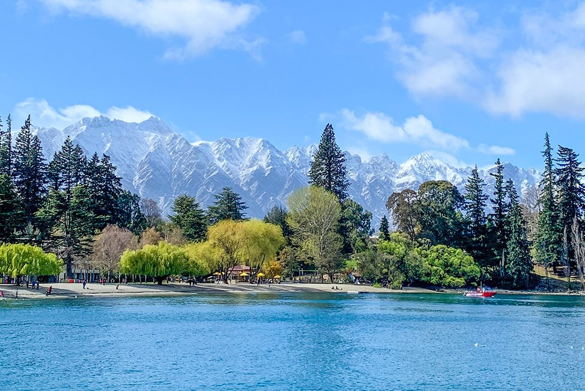
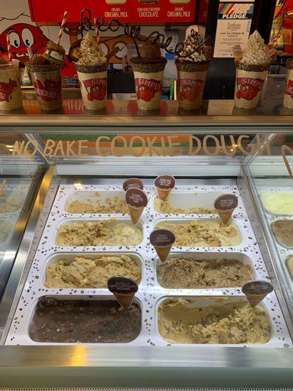
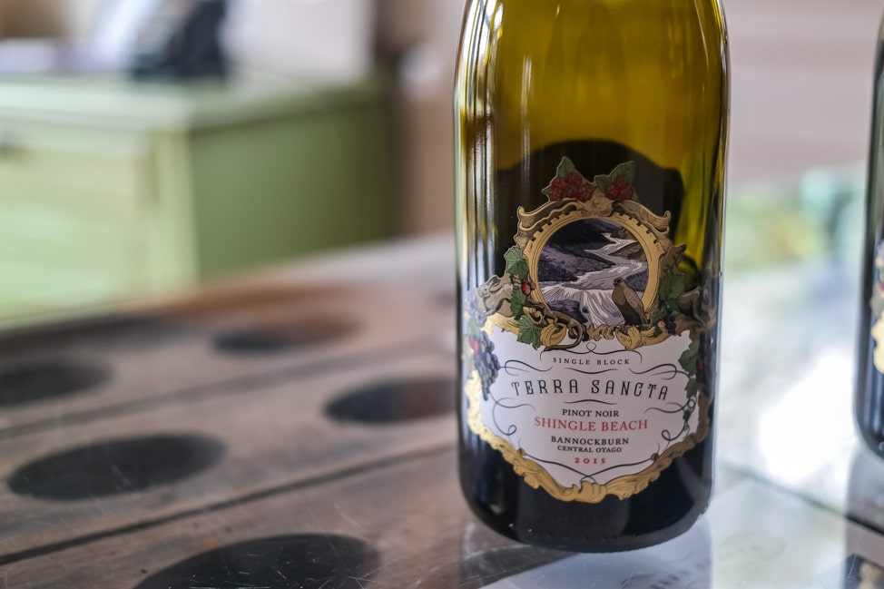
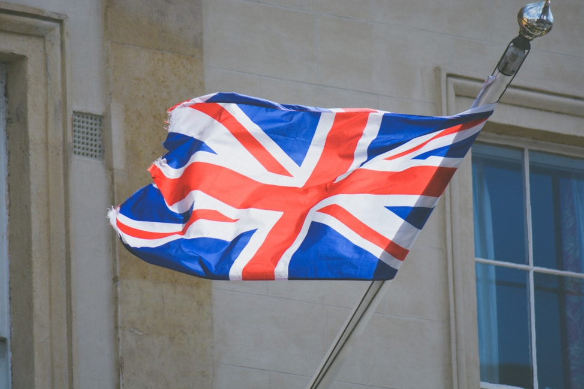
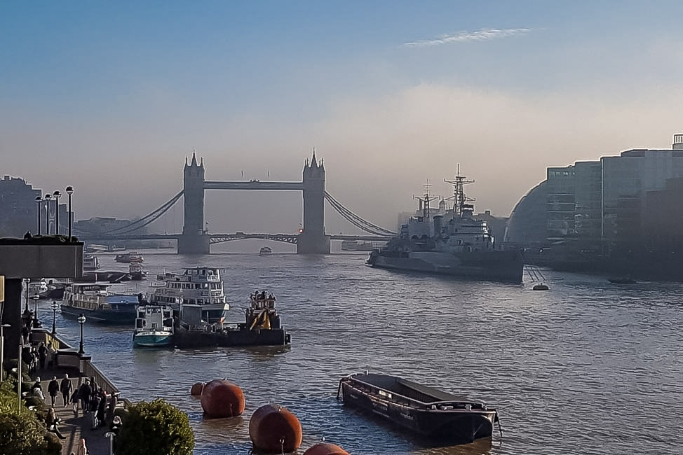
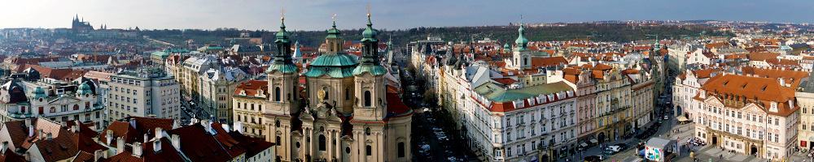
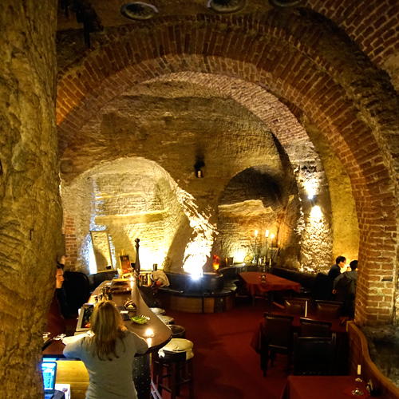

Join our journey
ONLY THE HIGHLIGHTS NEAR QUEENSTOWN, NEW ZEALAND
After a lovely week exploring the greater Auckland area of New Zealand’s North Island, our little crew headed south.
We flew from Auckland to Queenstown, which was easy and inexpensive. As we approached Queenstown, the peaks of snow-covered mountains poked through the clouds and we weaved between the hills. The landing was one of the most dramatic, visually, I’ve ever seen and we were immediately smitten with the jaw-dropping, dramatic landscape. It was about as opposite to the rolling green hills of the North Island as you could get. Because the Queenstown airport is centrally located, tiny and adorable, it was simple for us to grab our rental car and journey the ten minutes to our next Airbnb.
For those of you skeptical travelers who aren’t sure if visiting the South Island is a necessary part of your New Zealand itinerary, hear me out. I was once one of you.
The country has an unlimited trove of charming and gorgeous places to visit and with just two weeks, going to an airport and dealing with two rental cars seemed, well, like a waste. I was wrong.
The South Island’s dramatic and diverse scenery, its natural wonders and overall jaw-droppingness makes it 1,000,000% worth it. Pinky swear.
For our South Island itinerary, we again tried to balance our desire to see and do a lot with not wanting to feel too taxed or like we were spending all our time in the car. We used Queenstown as a base for three days, to see the city, and get our fill of the Central Otago wine region nearby. Then, we drove about 30 minutes south of Queenstown (the south corner of Lake Watakipu) for another few days, to mostly be closer to Milford Sound. We picked Queenstown specifically because of those highlights, but it turns out we were charmed by the city. It’s almost too beautiful to describe and we all agreed we can see why the billionaire techies of the world build their doomsday compounds here.
For anyone interested in adventure sports, wildlife and wine, Queenstown is a good bet. That covers basically everyone, right?
Rather than provide a daily play-by-play, here is a rundown of our collective highlights. I’m leaving out anywhere that wasn’t up to par or not memorable enough to make it into our notes. The big takeaway here is this: you will be spoiled for options in Queenstown. We personally didn’t find the need to stand in the queue at Fergburger or do a bungy jump at AJ Hackett’s, but you do you. We brazenly walked into restaurants without having done a shred of research and were surprised and delighted many times over.
Food & Drink
- Blue Kanu
- For drinks and apps at the bar. Pan-Asian cuisine can be hit-or-miss usually, but the crispy Sichuan calamari and the salmon poke hit the spot. And the super friendly bartender recommended we try a bottle of the Terra Sancta Mysterious Diggings Pinot Noir. That tip made us look into dropping by the Terra Sancta tasting room (spoiler alert: it was awesome).
- Hawker and Roll
- Casual, Malay-inspired street food spot, mostly to satisfy that dumpling craving. And laksa craving. And an overstuffed, pulled pork wrapped in a roti canai, sandwich craving. It was a very specific craving.
- Taco Medic* – Down a random side street, a hidden gem that we suspect is as good at 11am as it would be at 2am. The Baja taco may have been one of the better tacos we’ve had in years. Good to see the tortilla-making machine sitting right near the griddle. Tacos are best when the corn tortillas are home-made and fresh.
- Fat Badgers – A local favorite with a massive menu. The pizzas are large (20″), cheesy, meaty, and not lacking on the toppings. Our “Fat Badger” pie came with chicken, pepperoni, sausage, peppers, mushrooms, and onions. Restrained it was not. Next time we might order a salad to wash down all the pizza? But honestly, probably not.
- Cookie Time Cookie Bar – We went twice. A local institution you can even find as a snack on domestic Air New Zealand flights. Known for freshly baked cookies in a variety of flavors, and their raw cookie dough ice cream cones. You can literally feel the sugar grit on your teeth, but isn’t that half the point?
- The Fork and Tap, Arrowtown – It felt like we were back in Islington, at our favourite local pub, The Crown. Dark wood dining room, order at the bar, beer and cider on cask, and a delicious rendition of fish and chips. What’s not to love?

Wineries (all in Central Otago)
- Peregrine. Sprawling, the only winery we visited with completely free tastings, though we didn’t love some of the Pinot Noirs compared to our tasting rooms. Maybe that’s why it was one of the few spots where we didn’t take home a bottle.
- Misha’s Vineyard – We were charmed by the tasting room manager and spent upwards of an hour here. It was the first stop of a planned four during the 4 Barrels Wine Walking Tour, though we never made it to stops two, three, or four. Perhaps too much wine tasting at the first stop?
- Mt. Difficulty Wines – Beautiful setting on top of a hill, overlooking the valley. It was a little busy on the day we visited, and it felt a little rushed. Not as personal, but hey, it’s not their fault their tasting room is busy. Regardless, the wines tasted great, especially their dessert wine.
- Akarua Wines & Kitchen by Artisan – an impromptu stop on the side of the road, with amazing outdoor restaurant seating with an open-air tasting room in a secluded garden space. It felt very Instagram-y, but not in a depressing kind of way. Though the gaggle of girls next to us who kept saying that “omg…I love tropical Red Bull” didn’t add to the ambience. Thankfully, the wine consumption kept us sane.
- Terra Sancta* We tried this wine at Blue Kanu (see above) and added it to our winery list. We want to live here. Or work here. Or just become friends with all the other people who were tasting with us. A little cabin-like tasting room, with an oversized dining table in the middle of the space, where you sit and relax, and some out-going, knowledge person keeps giving you glasses of wine, and each glass tastes better than the last. It’s no surprise that we walked away with a few bottles from here.

EXPAT INTERVIEWS: LAURA & NICK FROM LONDON
Welcome to Expat Interviews, a monthly interview with fellow travel bloggers who have decided to pursue a life abroad and become expats. Each interview will be with someone who lives in a place we have recently explored ourselves, providing a look at what it is really like to live in that place, not just visit.
It makes sense to begin this series with London, the city where we first began our expat adventures over 4 years ago. We have written a lot about London, from our favorite markets to why we loved living there, but we thought it would be fun to get another perspective on life in London.
Today we have Laura Lynch, a travel blogger we have come to know well since meeting for coffee during the TBEX conference in Stockholm. She and her husband Nick were just about to move to London just as we were leaving, so we never overlapped as expats in London. Fortunately, we have been able to meet up a couple of times since, including just last month.
So lets hear about how Laura and Nick have adjusted to expat life, her transition to full time blogging, and what she likes (and doesn’t like) about the London food scene.

Tell us about yourself and your blog.
I’m Laura Lynch. My husband Nick and I started a travel blog called Savored Journeys in 2014 with the aim of it becoming my full-time job once we eventually moved overseas. In November 2016, we finally packed up our home in Seattle and moved to London. I have been blogging full time for a year now, and building my business from one site, to five sites (you can find the all of the links below). Our focus is on travelling for food and wine, so we’ve been enjoying the opportunity to explore Europe. I’ve recently started offering SEO consulting services to other bloggers, as well.
When did you realize you had interest in living abroad?
I’ve wanted to live abroad since I took my first overseas trip when I was 17. To say I caught the travel bug is understating it. It felt like a calling to me, in a way, to travel around the world and discover new things outside my own country. It wasn’t until I met Nick, though, that a real plan to live abroad took hold. We discussed moving overseas before we were even married, and while it took about 5 years to materialize, we made it a priority.
How difficult was your visa process?
For us, the visa process was relatively easy, thanks to the fact that Nick was merely transferring his current job to London. His employer took care of arranging everything for us, which included making sure we filled out the paperwork correctly. The biggest obstacle we faced was having to get back to New York, after taking a 2 month sabbatical in Spain, to actually apply for the visa and get our passports back before returning to Spain.
What were the challenges in physically moving from Seattle to London?
The biggest challenge was financial, because we had to move our money out of United States financial institutes, due to banking restrictions that discourage U.S. banks from working with expats. It was a pain to set up new international accounts when we didn’t yet have a residence in another country.
We also had to sell all of our cars, furniture, and U.S. appliances that wouldn’t work in the U.K., so there were many weeks of Craigslist meetups and trips to the Goodwill to donate things that wouldn’t sell. We planned to take very little with us to London, because flats are smaller and furnished, so we didn’t need much more than clothes and personal items.

DISCOVERING PRAGUE: 4 DAYS IN THE BOHEMIAN CAPITAL
Prague is a city that feels almost untouched by time. Instantly you are swept up in its magic. Its gothic architecture, baroque buildings, medieval old town. Sure, you can see the same type of architecture in other cities throughout Europe, but not on the same scale. In fact, nothing really compares…

We had been looking forward to an adventure in Prague since we moved abroad to Salzburg. Every single person we talked to about the city would light up instantly as they remembered their Prague experience.
So what better way to spend my last birthday in my 20s, than getting lost in the romance of this medieval city? And with the purchase of our new car and Prague being only a 4 hour drive, it would also be our very first European road trip!
Day 2: Prague Castle, Monastery Beer, and Sunset strolls
Day 2 started off rainy, so we decided to take an Uber to the Prague Castle, hoping it would be perfect for bad weather. We grabbed a coffee at the Starbucks located in the castle complex and enjoyed a beautiful view of the city (seriously this Starbucks has one of the best views of Old Town!) as we sipped our lattes and discussed our day.
We were supposed to leave Prague the next day and continue on to Poland, but as we talked about everything else we wanted to do there, that decision quickly changed.
With the weather not being ideal for our last day, it just didn’t make sense to leave Prague. The coming weekend was supposed to be warm and beautiful and there was still so much to see. We easily could extend our stay at our Airbnb and get the most out of our visit instead of leaving early Saturday feeling like we missed so much. Decision made! We would stay in Prague for 2 more days.
With the pressure of seeing everything in 24 hours off our shoulders, it was time to enjoy Prague castle…
The Prague Castle Complex and St. Vitus Cathedral
The first thing we did during our visit was walk into St. Vitus Cathedral, a building that dominates the skyline everywhere in Prague. It is the largest cathedral in the city and has a incredible history.
A ticket to get into all the main attractions at Prague Castle (Circuit A) cost 350 CZK or about $15 and is good for 48 hours. We usually shy away from spending this kinda money, especially with a tight budget, but Prague Castle was an exception. We wanted to know the history and learn about what we are seeing instead of just passing through.
With a Circuit A ticket, we could get into the:
- St. Vitus Cathedral, Old Royal Palace
- Exhibition “The Story of Prague Castle”
- St. George’s Basilica
- Golden Lane with Daliborka Tower
- Powder Tower
- Rosenberg Palace
After our tickets were purchased, we followed signs for a monastic brewery we’d read about for a nice cold beer. As we strolled, we realized just how MASSIVE the Prague castle complex is. Going for a walk is such an adventure!
There are tons of hilly streets, narrow staircases, shops, cafes and restaurants. The area reminded us of Montmartre in Paris, but instead of a neighborhood perched on a hill, it was a castle complex perched on a hill (AH-MAZING!)
Peklo Restaurant
We followed the Monastery Beer sign and ended up at a restaurant called Peklo. It looked tiny (which was confusing since we were expecting a beer garden), but we decided to check it out anyways. Then we walked in and there were just stairs down…
From our experiences in the past (like in Strasbourg), any restaurant with stairs down in a medieval city is most likely a seriously awesome cave restaurant. And sure enough, WE WERE RIGHT! Peklo Restaurant used to be a wine cellar from the 12th century that King Charles IV created after he brought back grape vines from Burgundy. They had vineyards right above and a wine cellar below, which is where we were eating!
We found a table that was literally in the nook of the cave and sat down for beer and food! We both ordered blueberry Monastery beer – subtly sweet and so easy to drink. Then we ordered pork knuckle and baked goat cheese salad. The pork knuckle had crispy and flavorful skin and the baked goat cheese with candied walnuts arugula and tomatoes was simply perfection.
